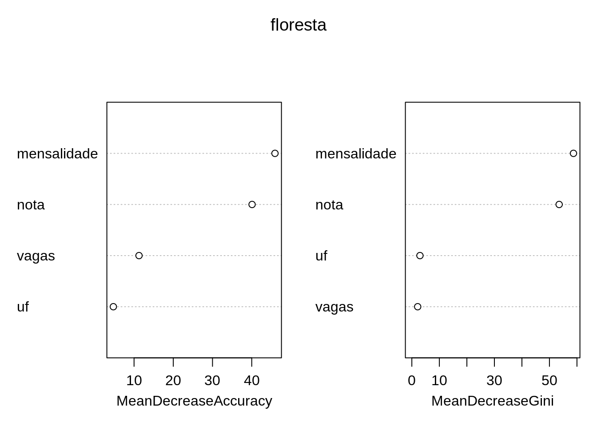

Classificando cursos no ProUni com Random Forest
Pedro Cavalcante
2019-05-07
Meu primeiro post aqui no blog foi um exercício de classificação. Como, com clustering \(k\)-means, poderíamos classificar cursos no ProUni? Aqui eu vou responder a mesma pergunta com uma ferramenta diferente, Random Forests. Vou explicar breve e simplesmente o que são/ como funcionam e depois estimar tudo.
Já aviso de antemão que a explicaçõe será muito superficial. É um assunto razoavelmente complicado então prefiro assim porque posso (i) evitar erros, (ii) não assustar alguns leitores e (iii) pular para a parte que mais me interessa que é a mão na massa. Também não vou falar em decisão dos hiperparâmetros do modelo, porque acho que esse assunto merece um post próprio.
Árvore de Decisão
Quem já estudou teoria dos jogos e conhece a notação em árvore de um jogo sequencial vai estar razoavelmente familiarizado com essa apresentação. Quem já teve algum contato com teoria dos grafos e estudou Árvores também deve conhecer isso de alguma maneira.
Cada vértice representa um teste lógico que retorna algo como verdadeiro/falso, maior/menor/igual ou algum tipo de controle de fluxo. É um objeto bem flexível, útil tanto para criar algum esquema de decisão quanto classificar observações. Treinar uma árvore de decisão é essencialmente testar regras, heurísticas.

“Exemplo de Árvore de Decisão”
O que uma Random Forest faz é treinar várias árvores de decisão diferentes com subconjuntos aleatórios das variáveis explicativas. Tendo várias árvores de decisão treinadas em subconjuntos aleatórios, a floresta resultante devolve uma ponderação dos vários resultados. Isso abre novas fronteiras de flexbilidade e capa sutilezas e não-linearidades nos dados que \(k\)-means e probits não captariam. Mais ainda, permite avaliar a importância das variáveis explicativas com noções diferentes de significância estatística. Basta avaliar em quantos nodos que usam uma certa explicativa reduzem o erro da floresta.
O artigo seminal, com uma exposição mais detalhada é Breiman (2001).
Rodando Random Forests
Agora que vamos à prática, aviso logo que vou omitir a análise exploratória dos dados. Já fiz isso aqui no primeiro post em que usei esses dados. Vamos usar o pacote randomForest, que implementa os algoritmos de Breiman em R, para estimar nossas árvores, selecionar variáveis e fazer validação cruzada - um procedimento muito bem explicado neste post do Daniel. Vou definir a semente \(1234\) que uso sempre. Prometo em outro post falar de sementes aleatórias, escolha e manipulação delas. Se você não é familiarizao com definição de sementes, não se preocupe, não vai fazer falta.
library(randomForest)
library(tictoc)
set.seed(1234)
head(prouni)## mensalidade medicina nota vagas uf
## 1 9999.99 Medicina 740.22 29 MS
## 2 9836.40 Não-Medicina 663.36 1 CE
## 3 9715.61 Medicina 739.62 23 SP
## 4 9689.34 Não-Medicina 651.00 5 CE
## 5 9674.34 Medicina 758.32 12 AC
## 6 9650.00 Medicina 738.92 23 SP
## uni
## 1 Universidade Anhanguera - UNIDERP
## 2 Faculdade Princesa do Oeste - FPO
## 3 Universidade Cidade de São Paulo - UNICID
## 4 Faculdade Princesa do Oeste - FPO
## 5 Faculdade Barão do Rio Branco - FAB
## 6 Universidade do Oeste Paulista - UNOESTE
## campus
## 1 CAMPO GRANDE - SEDE - Miguel Couto
## 2 UNIDADE SEDE - São Vicente
## 3 UNIVERSIDADE CIDADE DE SÃO PAULO - UNICID - SEDE - Tatuapé
## 4 UNIDADE SEDE - São Vicente
## 5 CAMPUS - RIO BRANCO - JARDIM EUROPA II - Jardim Europa II
## 6 CAMPUS I SEDE ADMINISTRATIVA PRESIDENTE PRUDENTE - Cidade Universitária
## curso
## 1 Medicina
## 2 Enfermagem
## 3 Medicina
## 4 Psicologia
## 5 Medicina
## 6 MedicinaComo queremos classificar cursos entre Medicina, explicativas não incluirão campus nem nome do curso. Tirei o nome do curso em particular porque a implementação do randomForest não lida com preditores categóricos com mais de 53 níveis e temos aproximadamente 215 cursos diferentes na base.
Vamos agora rodar repetidas vezes o modelo em um subconjutno aleatório dos dados, que chamaremos de in-sample e com o modelo treinado testaremos a performance dele classificando o outro subconjunto dos dados, que chamaremos de out-of-sample. É sempre importante fazer esse tipo de teste para se proteger de overfitting e ter uma ideia da precisão do seu modelo.
n = 100 # número de validações
resultadosRF = vector()
tic("Estimando")
for(i in 1:n) {
set.seed(i) # usamos sementes variadas para escolher subconjuntos diferentes dos dados
prouni$index = sample(2,
nrow(prouni),
replace = TRUE,
prob = c(0.5, 0.5)) # atribuímos às observações um status de grupo 1 ou 2
sample = prouni[prouni$index == 1,] # grupo 1 será o grupo in-sample
out.sample = prouni[prouni$index == 2,] # grupo 2 será o out-of-sample
floresta = randomForest(medicina ~ mensalidade + nota + vagas + uf,
data = sample,
importance = TRUE) # estimamos a floresta
out.sample$predicaoRF = predict(floresta,
out.sample,
type = "response") # com a floresta estimada prevemos o curso
resultRF = as.vector(table(out.sample$medicina, out.sample$predicaoRF))
resultadosRF[i] = resultRF[1]/(resultRF[1] + resultRF[2]) # uma espécie de taxa de acerto
}
toc()## Estimando: 333.327 sec elapsedfloresta #sumário da última floresta estimada##
## Call:
## randomForest(formula = medicina ~ mensalidade + nota + vagas + uf, data = sample, importance = TRUE)
## Type of random forest: classification
## Number of trees: 500
## No. of variables tried at each split: 2
##
## OOB estimate of error rate: 0.01%
## Confusion matrix:
## Medicina Não-Medicina class.error
## Medicina 59 0 0.000000e+00
## Não-Medicina 1 16131 6.198859e-05mean(resultadosRF) # taxa média de acerto## [1] 0.9909667Também podemos avaliar a importância das variáveis usando randomForest::importance() ou visualizar isso com randomForest::varImpPlot(). A métrica específica é diminuição média da acurácia classificatória da floresta.
varImpPlot(floresta) 
importance(floresta,
type = 1,
scale = TRUE)## MeanDecreaseAccuracy
## mensalidade 45.92490
## nota 40.08904
## vagas 11.26562
## uf 4.72057Eu juro que tentei achar maneiras claras e diretas de interpretar a importância das variáveis de uma Random Forest, mas pelo visto isso não existe. Achei alguns comentários legais sobre assunto nese post do CrossValidated e aparentemente a melhor ideia é ler como utilidade, ordinalmente.